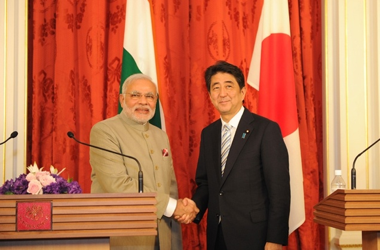

Activities:-: What has the Modi government achieved since coming to power?
1. Strong Message to Pakistan over Terrorism:
India and Pakistan were to conduct a bilateral foreign Secretary level talks in mid-August. However, the constant interference of the Pakistan High commission in the politics of kashmir forced India to call off the talks. Also, the Army posted at Indo-Pak Borders was given the full authority and power to revert to any attack coming their way.( Ceasefire violations).
Mr.Modi also addressed the issue of Terrorism over an international platform like UN.
2. Foreign Investments:
Mr.Modi's recent visit to Japan brought in 35 Billion $ as investment in India over a period of Five years. Also, Japan promised
to contribute towards bullet trains in India. The "Make In India" pitch by Modi too gained Momentum in Japan with Japanese manufacturers
interested in investing in India.

3. India's Uranium deal with Australia:
Australia is set to sign a Nuclear Power deal with India soon to supply around 500 tonnes of Uranium to India. India's power worries will
be eliminated once the deal is signed and implemented with safer nuclear plants providing safer nuclear power.
4. Modi's " Clean India initiative":
Mr. Modi announced to build toilets for girls in his Independence Day Speech and promote cleanliness in India. Soon, TCS and Bharti pledged
Rs. 100 crore each to develop toilets for girls throughout the nation.
5. Make in India campaign:
TATA group and Airbus to work together to manufacture Fighter Jets for the military.
Airbus may partner Tatas for manufacturing defence transport aircraft - The Times of India
6 Stealth submarines to be manufactured in India for Rs.50,000 crore.
Centre gives nod to defence projects worth Rs 80,000 crore - The Economic Times